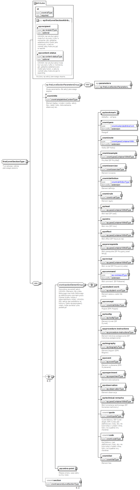
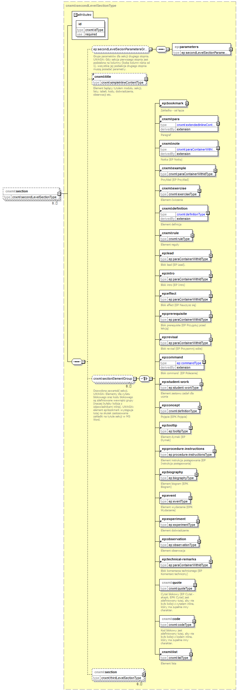

| diagram |  | ||||||||||||||||||||||||||||
| namespace | http://cnx.rice.edu/cnxml | ||||||||||||||||||||||||||||
| children | ep:parameters cnxml:title ep:bookmark cnxml:para cnxml:note cnxml:example cnxml:exercise cnxml:definition cnxml:rule ep:lead ep:intro ep:effect ep:prerequisite ep:revisal ep:command ep:student-work ep:concept ep:tooltip ep:procedure-instructions ep:biography ep:event ep:experiment ep:observation ep:technical-remarks cnxml:quote cnxml:code cnxml:list ep:zebra-point cnxml:section | ||||||||||||||||||||||||||||
| used by |
|
||||||||||||||||||||||||||||
| attributes |
|
||||||||||||||||||||||||||||
| annotation |
|
||||||||||||||||||||||||||||
| source | <xs:complexType name="firstLevelSectionType"> <xs:annotation> <xs:documentation>Typ opisujący sekcję pierwszego poziomu</xs:documentation> </xs:annotation> <xs:sequence> <xs:group ref="ep:firstLevelSectionParametersGroup" minOccurs="0"/> <xs:element ref="cnxml:title" minOccurs="0"/> <xs:choice minOccurs="0" maxOccurs="unbounded"> <xs:group ref="cnxml:sectionElementGroup"> <xs:annotation> <xs:documentation>Dozwolona zawartość sekcji. UWAGA: Elementy dla cytatu blokowego oraz kodu blokowego są zdefiniowane wewnątrz grupy (inaczej byłaby kolizja z odpowiednikami inline). UWAGA: Gdy sekcja jest podzielona na kolumny (patrz ep:parameters), wtedy może zawierać tylko podsekcje!</xs:documentation> </xs:annotation> </xs:group> <xs:element ref="ep:zebra-point"/> </xs:choice> <xs:element name="section" type="cnxml:secondLevelSectionType" minOccurs="0" maxOccurs="unbounded"/> </xs:sequence> <xs:attribute name="id" type="cnxml:idType" use="required"/> <xs:attributeGroup ref="ep:firstLevelSectionAttributesGroup"/> </xs:complexType> |
| type | idType | |||||||||||||
| properties |
|
|||||||||||||
| facets |
|
|||||||||||||
| source | <xs:attribute name="id" type="cnxml:idType" use="required"/> |
| diagram |  | ||||||||||||
| namespace | http://cnx.rice.edu/cnxml | ||||||||||||
| type | cnxml:secondLevelSectionType | ||||||||||||
| properties |
|
||||||||||||
| children | ep:parameters cnxml:title ep:bookmark cnxml:para cnxml:note cnxml:example cnxml:exercise cnxml:definition cnxml:rule ep:lead ep:intro ep:effect ep:prerequisite ep:revisal ep:command ep:student-work ep:concept ep:tooltip ep:procedure-instructions ep:biography ep:event ep:experiment ep:observation ep:technical-remarks cnxml:quote cnxml:code cnxml:list cnxml:section | ||||||||||||
| attributes |
|
||||||||||||
| source | <xs:element name="section" type="cnxml:secondLevelSectionType" minOccurs="0" maxOccurs="unbounded"/> |